Sharks have been swimming around for over 400 million years. They've survived five mass extinctions. The sixth one is us, and it might be the first one they don't get through.
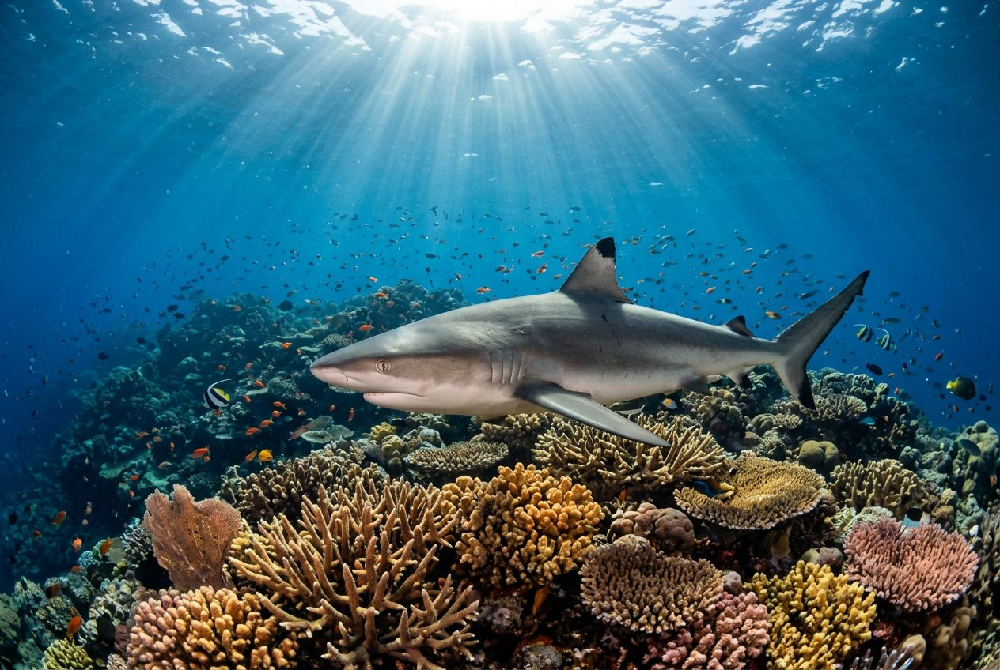
I've loved sharks for 3 whole years now, and this website may only be new and a little messy, but it's always been a dream of mine to help raise awareness for them and tell people what's actually going on in the sharks vs human ocean world. All I ever wanted was for sharks to live their lives in peace, and for them to get the heck off the menu.
Human beings will only ever look after the things they value. Our first battle then is to convince the world of the wonder of sharks.Steve Backshall, on becoming patron of the shark charity Bite-Back, 2016
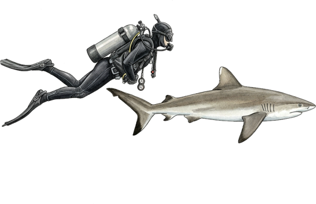
Deadly 60 presenter, explorer, and the person who got in the water with a great white with no cage and came out saying it was beautiful. He's the reason this website exists.
Meet my heroSharks are right at the top of the food chain, and the top is what holds everything else in place. Take them away and it messes things up all the way down to the seagrass. Here's how.
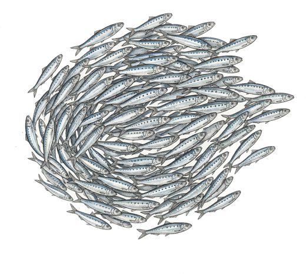
Sharks go for the slow, sick and old fish first, because they're the easiest to catch. That sounds harsh but it stops diseases spreading through a whole shoal and keeps the rest of the fish strong. No other animal does this job on anything like the same scale.
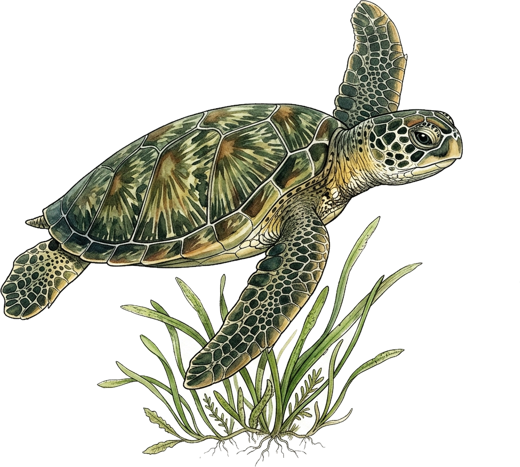
Turtles, dugongs and parrotfish all eat less and keep moving when there are sharks about. Scientists actually call it a "landscape of fear", which I think is a brilliant name. It means no one patch of seagrass or reef gets munched down to nothing. And seagrass stores carbon faster than rainforests do, so this matters for climate change too.
Here's a fact that surprised me. One reef shark in Palau is worth nearly $2 million over its life because of all the divers who pay to see it. Dead, it's worth a few hundred dollars. Whole towns in Mexico, the Philippines and Australia make their living from people coming to swim with whale sharks. Sharks make money when they stay in the water.
Scientists call this a trophic cascade. Basically it's a chain reaction. This is what tends to happen when the sharks disappear from a bit of coast.
Longlines, nets and finning wipe out the big sharks in an area over ten or twenty years. Sharks have babies really slowly, so they can't bounce back the way sardines can.
Rays, skates, groupers and small sharks that used to get eaten now don't. So there are suddenly loads of them, sometimes ten times as many.
All those extra rays are hungry. Scallops, clams and oysters get wiped out. In other places, with no sharks to keep them moving, grazers strip the seagrass bare, and when the algae-eating fish go the reefs get covered in slime.
Fishermen lose their shellfish. Reefs stop growing and stop protecting the coast from storms. The seagrass that was storing carbon dies. And people who never cared about sharks suddenly notice they're gone.
This isn't a theory. Off the east coast of America, big sharks like hammerheads and bull sharks dropped by over 90% in the 1980s and 90s. Cownose rays, which those sharks used to eat, went crazy. The rays ate all the scallops, and in 2004 a scallop fishery in North Carolina that had been going for a hundred years had to shut down. And on reefs in the Pacific, the ones that still have their sharks have loads more fish overall than the ones where the sharks have been fished out.
Sharks aren't disappearing because of some mystery ocean problem. Around a hundred million of them get pulled out of the sea every year, and they just can't have babies fast enough to keep up with that.
Most fish lay millions of eggs and are grown up in a year or two. Sharks grow slowly, take ages to grow up, and only have a few pups at a time, sometimes only every other year. If you take out too many adults there's no quick way back. Here's how many years it takes different animals to be old enough to have babies:
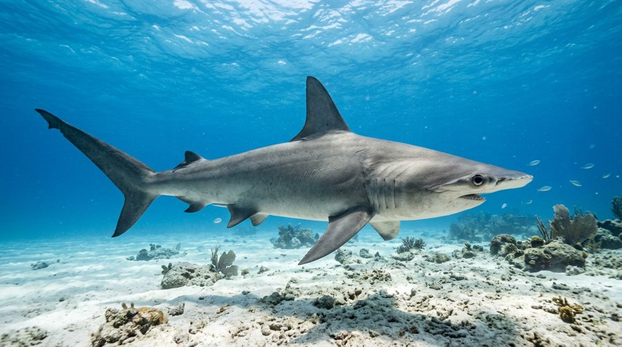
That wide head is full of sensors that can feel the heartbeat of a stingray hiding under the sand. Its huge fins are worth a lot of money, and it's lost over 80% of its population in just three generations.
Tap to flip back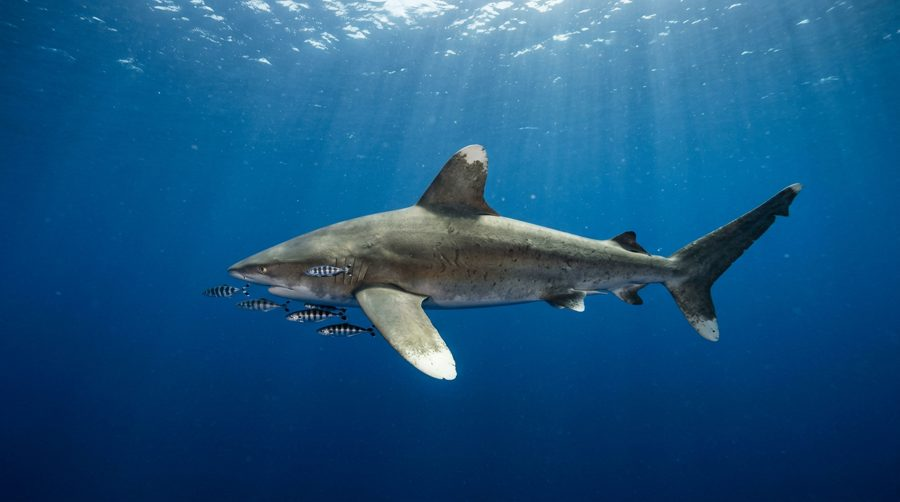
This used to be called the most common big animal on the whole planet. Decades of getting caught on longlines have cut it by about 98% in some oceans. You can tell it by its rounded fins with white tips.
Tap to flip back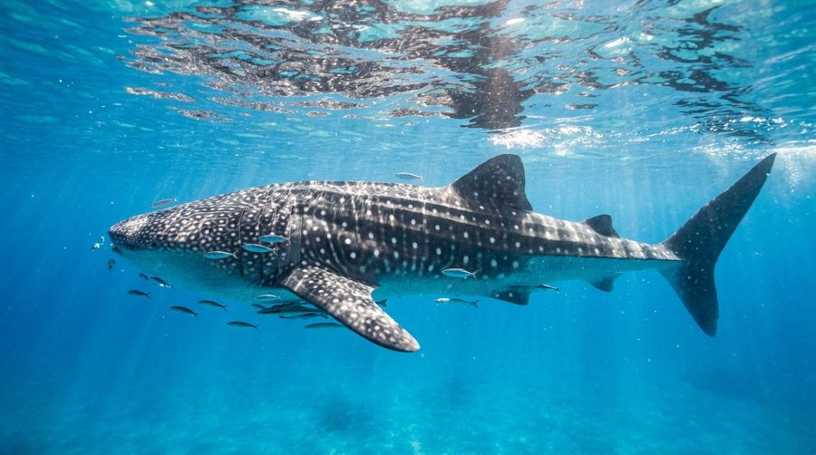
The biggest fish in the sea, up to 18 metres long, and all it eats is plankton. Every single one has its own pattern of spots, like a fingerprint. It gets hit by ships, caught by fishing boats and killed for its fins.
Tap to flip back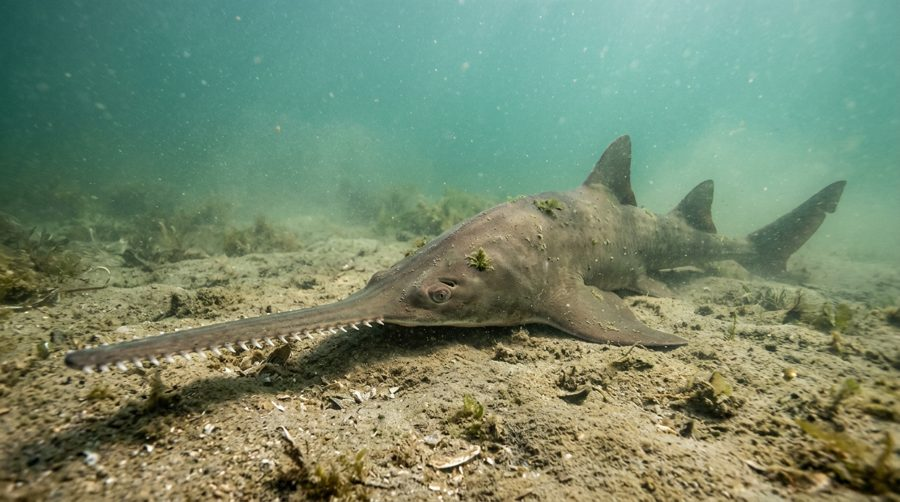
Technically a ray, but a really close cousin of sharks. That saw gets hopelessly tangled in fishing nets. It's already gone from loads of places it used to live. The largetooth sawfish has disappeared from most of the Atlantic.
Tap to flip back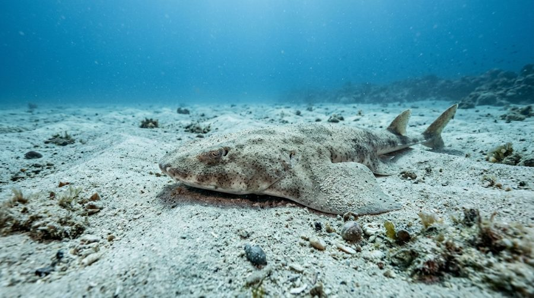
Flat, sandy coloured and almost impossible to spot on the seabed. It used to be common around Britain! Bottom trawling scoops it up by accident. Now it's mostly hanging on around the Canary Islands and a few bays in Wales.
Tap to flip back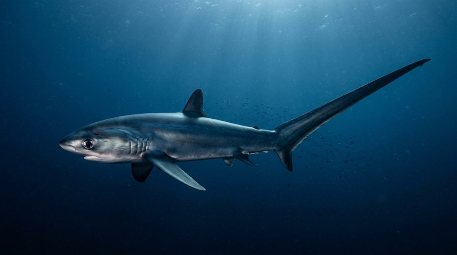
Its tail is as long as its whole body, and it whips it round to stun sardines. Which is awesome. But that long tail also gets snagged on longlines, and thresher numbers have roughly halved in two generations.
Tap to flip back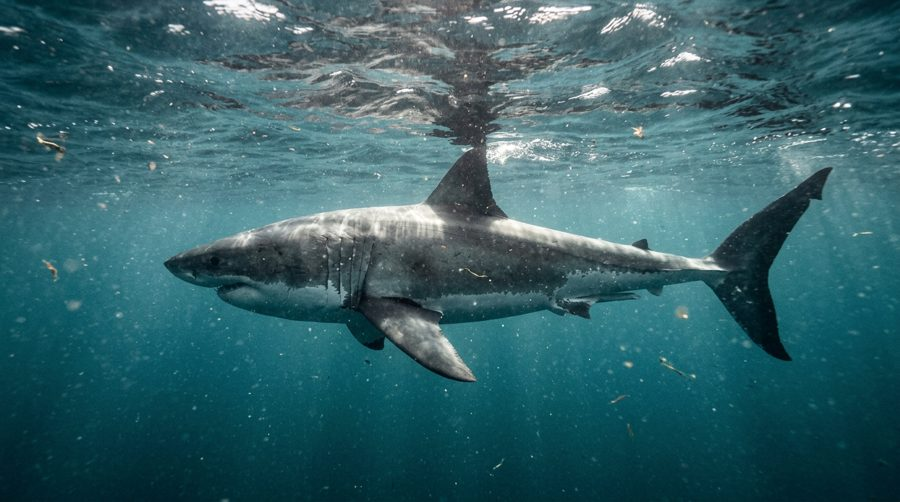
Protected in American waters since 1997. Seals have come back too, so great whites are now back around Cape Cod and up the Atlantic coast in numbers nobody's seen for decades. Which proves it. Stop killing them and they come back.
Tap to flip backMost of what people "know" about sharks comes from films. Let's see how much of it is actually true.
They've been around for about 450 million years. Trees only turned up about 350 million years ago. Saturn's rings might be younger than sharks! Losing them now would end one of the longest success stories on Earth.
There are over 500 kinds of shark and more than half of them are under a metre long. The dwarf lanternshark fits in your hand. The giant man-eater from the films is a tiny minority, and it mostly eats seals anyway.
The idea that sharks never get cancer was made up to sell shark cartilage pills. They do get tumours. The pills do nothing for you, and buying them kills sharks.
Little pores on their snout pick up the tiny electrical signals that every living muscle gives off. That's how a hammerhead finds a ray buried in sand. It's also why sharks sometimes bite metal things. Metal feels electrical to them. It's not because they want to eat you.
Epaulette sharks walk across reefs on their fins. Lanternsharks glow in the dark. Greenland sharks can live past 400 years, so some of them alive right now were born before the Great Fire of London. I think about that a lot.
"Rock salmon", "huss" and "flake" on a chip shop board are all shark. Squalene in skincare is often shark liver oil. Reading labels is honestly one of the easiest things you can do.
Great whites are coming back to the east coast of America now they're protected. Grey nurse sharks are slowly recovering in Australia. Some beaches have swapped shark nets for drones and alarms. None of it took a miracle. It just took people deciding it mattered.
Shark turns up in loads of things that don't say shark on the label.
Being caught by accident is the big killer, so how your tuna was caught matters more than whether you eat it.
Small charities do loads with not very much.
Sharks get killed because people are scared of them and nobody minds. We can fix the second bit.